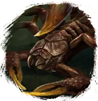
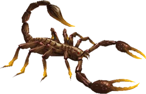

Открыть в интерактивной вики →

| Уровень | 65 |
|---|---|
| Прокачка | есть |
| Ранг в стае | 5 |
| Здоровье | 1800 |
| Мана | 1100 |
| Выносливость | 1300 |
| Статистика | Уровень: 65, ранг: 5, здоровье: 1800, мана: 1100, выносливость: 1300 |
Цена
6kk  Золото
Золото
ЗолотоГде взять
Покупается в Клетке гильдий 2
Выкуп
Выкуп за смерть:
8х Платина либо откат 4 часа
Платина либо откат 4 часа
8х
Платина либо откат 4 часаНавыки


Скины
Доп. информация
Требуемый уровень: 65
Цена: 6 000 000 золота
Покупка: II гильдейская клетка
Может получать опыт — ДА
Описание
 | Скорпион любому отравит жизнь — кроме хозяина. Чудовище наполнено ядами такой силы, что многие противники впадают в панику от одной мысли о них. Атакует физически, издалека и ментально. Использует: Рёв, Рвота, Укус, Болезненный удар, Плевок ядом. | |